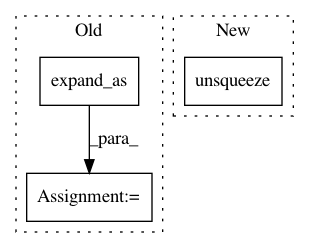

5e148038be5971f2c7c811d46a1d7b28c759ecda,layers/common_layers.py,GravesAttention,forward,#GravesAttention#Any#Any#Any#Any#,144
Before Change
g_t.size(1),
inputs.size(1))
sig_t = sig_t.unsqueeze(2).expand_as(g_t)
mu_t_ = mu_t.unsqueeze(2).expand_as(g_t)
j = self.J[:g_t.size(0), :, :inputs.size(1)]
// attention weights
phi_t = g_t * torch.exp(-0.5 * (mu_t_ - j)**2 / (sig_t**2))
After Change
j = self.J[:inputs.size(1)+1]
// attention weights
phi_t = g_t.unsqueeze(-1) * torch.exp(-0.5 * (mu_t.unsqueeze(-1) - j)**2 / (sig_t.unsqueeze(-1)**2))
// discritize attention weights
alpha_t = self.COEF * torch.sum(phi_t, 1)
In pattern: SUPERPATTERN
Frequency: 4
Non-data size: 3
Instances
Project Name: mozilla/TTS
Commit Name: 5e148038be5971f2c7c811d46a1d7b28c759ecda
Time: 2020-01-09
Author: root@sp-mlc3-5423-0.mlc
File Name: layers/common_layers.py
Class Name: GravesAttention
Method Name: forward
Project Name: pyprob/pyprob
Commit Name: 0cc04fcc2df0b2005de354a602c9a16821fa4b2f
Time: 2018-04-08
Author: atilimgunes.baydin@gmail.com
File Name: pyprob/nn.py
Class Name: ProposalPoisson
Method Name: forward
Project Name: OpenNMT/OpenNMT-py
Commit Name: 5972cb1690cafd70c2d1ef36c42707ec36e05276
Time: 2017-07-04
Author: sasha.rush@gmail.com
File Name: onmt/Models.py
Class Name: Decoder
Method Name: forward
Project Name: mozilla/TTS
Commit Name: 0e8881114b7cd223a41a452ea7cf570b56c109a7
Time: 2020-01-10
Author: root@sp-mlc3-5423-0.mlc
File Name: layers/common_layers.py
Class Name: GravesAttention
Method Name: forward